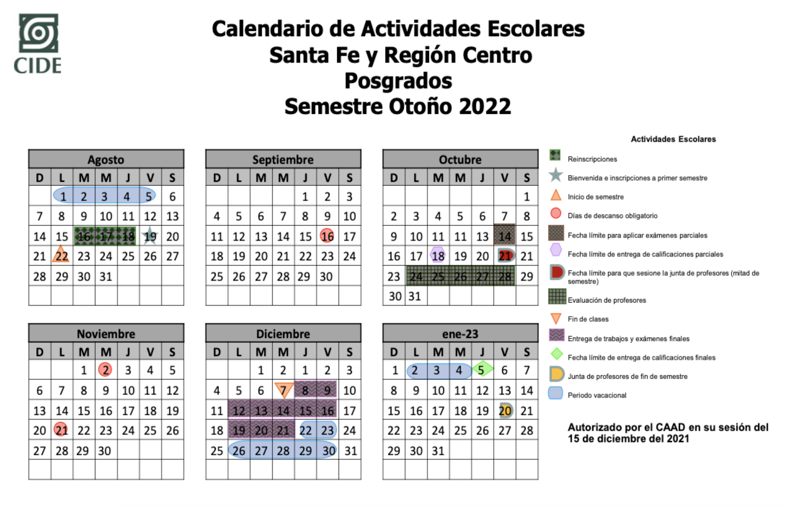

CIDE - Matemáticas
Página del curso de Matemáticas del primer semestre de la maestría en economía del CIDE.
Agosto-Diciembre 2022.
Profesor: Raciel Vásquez
Laboratorista: Rafael Martínez Martínez
Las actividades del laboratorio son:
- Resolver dudas de clase
- Hacer problemas
- Proponer listas de ejercicios
- Evaluar el laboratorio
Temario
- Conjuntos y relaciones
- Análisis Real
- Cálculo Diferencial
- Conjuntos Convexos y teoremas de separación
- Funciones Cóncavas
- Optimización
Referencias
[AM] Andreu Mas-Colell, Michael D. Whinston and Jerry R. Green (1995), Microeconomic Theory. Oxford University Press
[AF] Angel de la Fuente (2000), Mathematical Methods and Models for Economists. Cambridge University Press.
[RV] Rakesh V. Vohra (2005), Advanced Mathematical Economics. Routledge.
[KD] Kaniska Dam. Notas de clase. Enlace
Evaluación
Examénes (Raciel) \(80\%\)
- Se aplican tres exámenes. Cada examen se realiza una semana después de la conclusión del bloque (subcojunto de temas).
Actividades laboratorio (Rafael) \(20\%\)
- Se considera un actividad de laboratorio todo trabajo que se entregue en la plataforma del curso (Teams). Todas las actividades tienen el mismo peso. La calificación final del laboratorio es el promedio de las calificaciones obtenidas en las actividades.
Horario
| Martes | Miércoles | Jueves |
|---|---|---|
| 11:20-12:50 | 11:20-12:50 | |
| 14:00 - 16:00 (Laboratorio) |
Calendario
